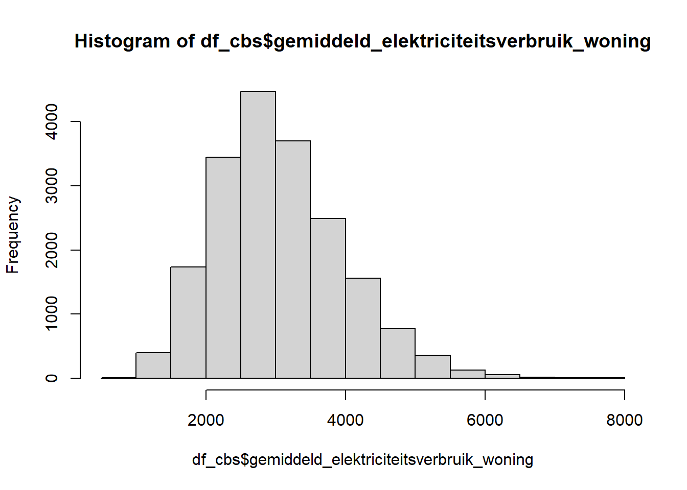
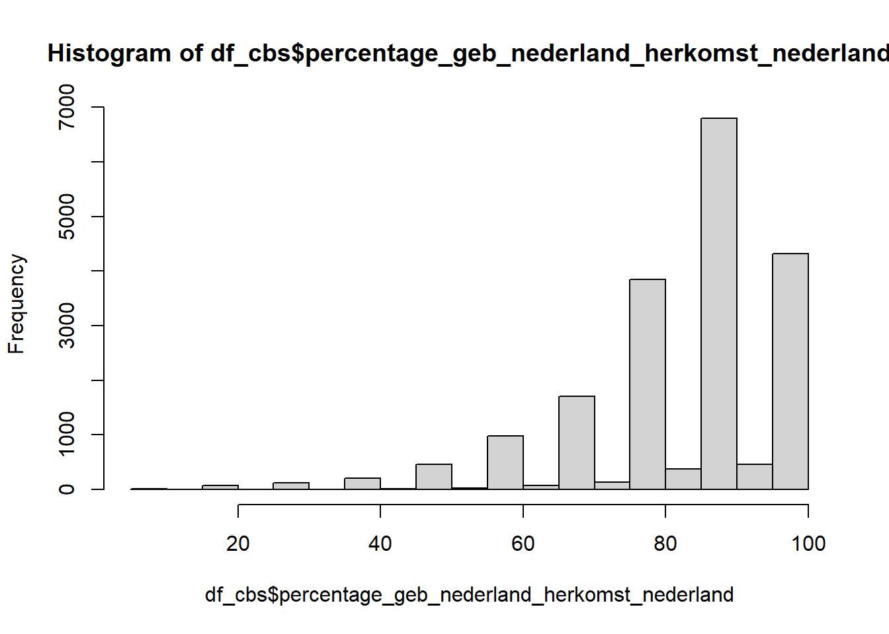
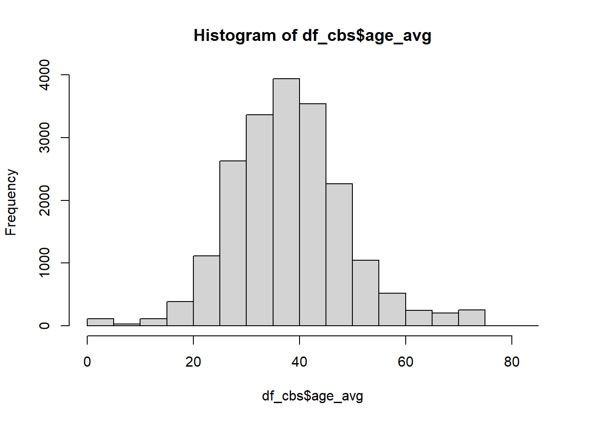

rm(list=ls())
library(tidyverse)
library(sf)
library(spdep)
library(TTR)
Step 1: PV data
The hypotheses will be tested using data from several sources. The
first source of data comes from energy company Westland Infra, who have
publicly available yearly data about energy usage for postal code areas
of different sizes in the Dutch municipalities of Westland and
Midden-Delfland (https://westlandinfra.nl/over-westland-infra/duurzaamheid-innovaties/open-data/).
From this data we will use our dependent variable, which is the
percentage of electricity connections in a postal code area that have a
net negative electricity usage over the year. As one needs to produce
electricity to end up with a net negative electricity usage, a higher
percentage represents the presence of more solar panel installations.
Research on the Dutch island of Texel shows that around 17% of
households with solar panels are yearly net producers (Aydın et al.,
2023).
pv <- readRDS("./data/pv_data.Rds") |>
filter(year >= 2015) |>
mutate(id = row_number()) |>
relocate(id) |>
rename(postcode_van = POSTCODE_VAN,
postcode_tot = POSTCODE_TOT,
straatnaam = STRAATNAAM,
leveringsrichting = X.Leveringsrichting) |>
select(id, postcode_van, postcode_tot, straatnaam, year, leveringsrichting)
class(pv$leveringsrichting)
pv$leveringsrichting <- as.numeric(gsub(",", ".", pv$leveringsrichting))
#the original variable represents the percentage with a positive electricity usage, we are interested in the opposite so we reverse the variable
pv <- pv |> mutate(teruglevering = 100 - leveringsrichting)
Step 2: PC6 data
Demographic characteristics are taken from data from Statistics
Netherland for each (PC6) postal code (https://www.cbs.nl/nl-nl/dossier/nederland-regionaal/geografische-data/gegevens-per-postcode).
The data ranges from 2015 to 2024. After the 1st of May the data of 2019
and 2020 should be available as well!
#load data
cbs_pc6_24 <- st_read(dsn = "C:/Users/kalle/Downloads/cbs_pc6_2024_v1.gpkg") |>
mutate (year = 2024)
cbs_pc6_23 <- st_read(dsn = "C:/Users/kalle/Downloads/cbs_pc6_2023_v2.gpkg") |>
mutate (year = 2023)
cbs_pc6_22 <- st_read(dsn = "C:/Users/kalle/Downloads/cbs_pc6_2022_vol.gpkg") |>
mutate (year = 2022)
cbs_pc6_21 <- st_read(dsn = "C:/Users/kalle/Downloads/cbs_pc6_2021_vol.gpkg") |>
mutate (year = 2021) |>
rename (percentage_geb_nederland_herkomst_nederland = percentage_nederlandse_achtergrond)
cbs_pc6_2124 <- bind_rows(cbs_pc6_24, cbs_pc6_23, cbs_pc6_22, cbs_pc6_21) |>
select (- c(10, 17:20, 23:31, 37, 40:131))
rm(cbs_pc6_24, cbs_pc6_23, cbs_pc6_22, cbs_pc6_21)
gc()
cbs_pc6_18 <- st_read(dsn = "C:/Users/kalle/Downloads/CBS-PC6-2018-v3/CBS_PC6_2018_v3.shp") |>
mutate (year = 2018) |>
rename (Postcode = PC6)
cbs_pc6_17 <- st_read(dsn = "C:/Users/kalle/Downloads/CBS-PC6-2017-v3/CBS_PC6_2017_v3.shp") |>
mutate (year = 2017)
cbs_pc6_16 <- st_read(dsn = "C:/Users/kalle/Downloads/CBS-PC6-2016-v2/CBS_PC6_2016_v2.shp") |>
mutate (year = 2016)
cbs_pc6_15 <- st_read(dsn = "C:/Users/kalle/Downloads/CBS-PC6-2015-v2/CBS_PC6_2015_v2.shp") |>
mutate (year = 2015)
#the data from older years uses different column names so they have to be renamed #first
cbs_pc6_1518 <- bind_rows(cbs_pc6_18, cbs_pc6_17, cbs_pc6_16, cbs_pc6_15) |>
rename (
postcode6 = Postcode,
aantal_inwoners = INWONER,
aantal_mannen = MAN,
aantal_vrouwen = VROUW,
aantal_inwoners_0_tot_15_jaar = INW_014,
aantal_inwoners_15_tot_25_jaar = INW_1524,
aantal_inwoners_25_tot_45_jaar = INW_2544,
aantal_inwoners_45_tot_65_jaar = INW_4564,
aantal_inwoners_65_jaar_en_ouder = INW_65PL,
percentage_geb_nederland_herkomst_nederland = P_NL_ACHTG,
percentage_westerse_migr_achtergr = P_WE_MIG_A,
percentage_niet_westerse_migr_achtergr = P_NW_MIG_A,
aantal_part_huishoudens = AANTAL_HH,
gemiddelde_huishoudensgrootte = GEM_HH_GR,
aantal_woningen = WONING,
percentage_koopwoningen = P_KOOPWON,
percentage_huurwoningen = P_HUURWON,
aantal_huurwoningen_in_bezit_woningcorporaties = WON_HCORP,
aantal_niet_bewoonde_woningen = WON_NBEW,
gemiddelde_woz_waarde_woning = WOZWONING,
gemiddeld_elektriciteitsverbruik_woning = G_ELEK_WON,
aantal_personen_met_uitkering_onder_aowlft = UITKMINAOW,
geom = geometry
) |>
select (- c(10, 15:18, 21:29, 35, 39:130))
rm(cbs_pc6_18, cbs_pc6_17, cbs_pc6_16, cbs_pc6_15)
gc()
#join and set NAs
cbs_pc6 <- bind_rows(cbs_pc6_2124, cbs_pc6_1518) |>
relocate (postcode6, year, geom)|>
mutate(across(where(is.numeric), ~na_if(., -99997))) |>
mutate(across(where(is.numeric), ~na_if(., -99995)))
rm(cbs_pc6_2124, cbs_pc6_1518)
gc()
The postal code areas in the data from Westland Infra can spa
multiple PC6 postal codes. First we select all of the PC6 postal codes
in the CBS data that are contained in the postal code ranges of the
Westland Infra data.
cbs_pc6_westland <- cbs_pc6 |>
inner_join(
pv,
by = join_by(
year == year,
postcode6 >= postcode_van,
postcode6 <= postcode_tot
)
)
rm(cbs_pc6)
gc()
Next we aggregate this data from single postal codes of the PC6 data
to the postal code areas of the Westland Infra data.
df_pc6 <- cbs_pc6_westland |>
group_by(id) |>
summarise(
geometry = sf::st_union(geom),
across(
c(
postcode_van,
postcode_tot,
straatnaam,
year,
teruglevering
),
first),
across(
c(
percentage_geb_nederland_herkomst_nederland,
percentage_geb_nederland_herkomst_overig_europa,
percentage_geb_nederland_herkomst_buiten_europa,
percentage_geb_buiten_nederland_herkomst_europa,
percentage_geb_buiten_nederland_herkmst_buiten_europa,
percentage_westerse_migr_achtergr,
percentage_niet_westerse_migr_achtergr
),
~ weighted.mean(.x, aantal_inwoners, na.rm = TRUE)
),
gemiddelde_huishoudensgrootte =
weighted.mean(gemiddelde_huishoudensgrootte,
aantal_part_huishoudens,
na.rm = TRUE),
across(
c(
percentage_koopwoningen,
percentage_huurwoningen,
gemiddelde_woz_waarde_woning,
gemiddeld_elektriciteitsverbruik_woning
),
~weighted.mean(.x, aantal_woningen, na.rm = TRUE)
),
across(
c(
aantal_inwoners,
aantal_mannen,
aantal_vrouwen,
aantal_inwoners_0_tot_15_jaar,
aantal_inwoners_15_tot_25_jaar,
aantal_inwoners_25_tot_45_jaar,
aantal_inwoners_45_tot_65_jaar,
aantal_inwoners_65_jaar_en_ouder,
aantal_part_huishoudens
),
~ sum(.x, na.rm = TRUE)
)
)
rm(cbs_pc6_westland)
gc()
Step 3: 500m * 500m
data
Some data, such as density and income, is only available at the level
of 500m by 500m squares (https://www.cbs.nl/nl-nl/dossier/nederland-regionaal/geografische-data/kaart-van-500-meter-bij-500-meter-met-statistieken).
We also use these squares to calculate the demographic diversity of
the surrounding neighborhood. These will also be the areas used to
calculate the effect of neighborhood solar panels.
cbs_500_24 <- st_read(dsn = "C:/Users/kalle/Downloads/cbs_vk500_2024_v1.gpkg") |>
mutate (year = 2024)
cbs_500_23 <- st_read(dsn = "C:/Users/kalle/Downloads/2025-cbs_vk500_2023_v2/cbs_vk500_2023_v2.gpkg") |>
mutate (year = 2023)
cbs_500_22 <- st_read(dsn = "C:/Users/kalle/Downloads/2025-cbs_vk500_2022_vol/cbs_vk500_2022_vol.gpkg") |>
mutate (year = 2022)
cbs_500_21 <- st_read(dsn = "C:/Users/kalle/Downloads/2024-cbs_vk500_2021_vol/cbs_vk500_2021_vol.gpkg") |>
mutate (year = 2021) |>
rename(percentage_geb_nederland_herkomst_nederland = percentage_nederlandse_achtergrond)
cbs_500_20 <- st_read(dsn = "C:/Users/kalle/Downloads/2023-cbs_vk500_2020_vol/cbs_vk500_2020_vol.gpkg") |>
mutate (year = 2020) |>
rename(percentage_geb_nederland_herkomst_nederland = percentage_nederlandse_achtergrond)
cbs_500_19 <- st_read(dsn = "C:/Users/kalle/Downloads/2023-cbs_vk500_2019_vol2/cbs_vk500_2019_vol2.gpkg") |>
mutate (year = 2019) |>
rename(percentage_geb_nederland_herkomst_nederland = percentage_nederlandse_achtergrond)
cbs_500_18 <- st_read(dsn = "C:/Users/kalle/Downloads/cbs_vk500_2018.gpkg") |>
mutate (year = 2018) |>
rename(crs28992res500m = c28992r500,
percentage_geb_nederland_herkomst_nederland = percentage_nederlandse_achtergrond)
cbs_500_17 <- st_read(dsn = "C:/Users/kalle/Downloads/cbs_vk500_2017.gpkg") |>
mutate (year = 2017) |>
rename(crs28992res500m = c28992r500,
percentage_geb_nederland_herkomst_nederland = percentage_nederlandse_achtergrond)
cbs_500_16 <- st_read(dsn = "C:/Users/kalle/Downloads/2019-cbs_vk500_2016_v2/CBS_VK500_2016_v2.shp") |>
mutate (year = 2016) |>
rename(
crs28992res500m = C28992R500,
aantal_inwoners = INWONER,
aantal_inwoners_0_tot_15_jaar = INW_014,
aantal_inwoners_15_tot_25_jaar = INW_1524,
aantal_inwoners_25_tot_45_jaar = INW_2544,
aantal_inwoners_45_tot_65_jaar = INW_4564,
aantal_inwoners_65_jaar_en_ouder = INW_65PL,
percentage_geb_nederland_herkomst_nederland = P_NL_ACHTG,
percentage_westerse_migr_achtergr = P_WE_MIG_A,
percentage_niet_westerse_migr_achtergr = P_NW_MIG_A,
percentage_laag_inkomen_huishouden = P_LINK_HH,
percentage_hoog_inkomen_huishouden = P_HINK_HH,
omgevingsadressendichtheid = OAD,
stedelijkheid = STED,
geom = geometry
)
cbs_500_15 <- st_read(dsn = "C:/Users/kalle/Downloads/2019-cbs_vk500_2015_v2/CBS_VK500_2015_v2.shp") |>
mutate (year = 2015) |>
rename(
crs28992res500m = C28992R500,
aantal_inwoners = INWONER,
aantal_inwoners_0_tot_15_jaar = INW_014,
aantal_inwoners_15_tot_25_jaar = INW_1524,
aantal_inwoners_25_tot_45_jaar = INW_2544,
aantal_inwoners_45_tot_65_jaar = INW_4564,
aantal_inwoners_65_jaar_en_ouder = INW_65PL,
percentage_geb_nederland_herkomst_nederland = P_NL_ACHTG,
percentage_westerse_migr_achtergr = P_WE_MIG_A,
percentage_niet_westerse_migr_achtergr = P_NW_MIG_A,
percentage_laag_inkomen_huishouden = P_LINK_HH,
percentage_hoog_inkomen_huishouden = P_HINK_HH,
omgevingsadressendichtheid = OAD,
stedelijkheid = STED,
geom = geometry
)
cbs_500 <- bind_rows(cbs_500_24, cbs_500_23, cbs_500_22, cbs_500_21, cbs_500_20, cbs_500_19, cbs_500_18, cbs_500_17, cbs_500_16, cbs_500_15)
rm(cbs_500_24, cbs_500_23, cbs_500_22, cbs_500_21, cbs_500_20, cbs_500_19, cbs_500_18, cbs_500_17, cbs_500_16, cbs_500_15)
gc()
cbs_500 <- cbs_500 |>
select(crs28992res500m,
aantal_inwoners,
aantal_inwoners_0_tot_15_jaar,
aantal_inwoners_15_tot_25_jaar,
aantal_inwoners_25_tot_45_jaar,
aantal_inwoners_45_tot_65_jaar,
aantal_inwoners_65_jaar_en_ouder,
percentage_geb_nederland_herkomst_nederland,
percentage_laag_inkomen_huishouden,
percentage_hoog_inkomen_huishouden,
omgevingsadressendichtheid,
stedelijkheid,
geom,
year)|>
relocate(crs28992res500m, geom, year,
aantal_inwoners_0_tot_15_jaar,
aantal_inwoners_15_tot_25_jaar,
aantal_inwoners_25_tot_45_jaar,
aantal_inwoners_45_tot_65_jaar,
aantal_inwoners_65_jaar_en_ouder,
percentage_geb_nederland_herkomst_nederland,
percentage_laag_inkomen_huishouden,
percentage_hoog_inkomen_huishouden,
omgevingsadressendichtheid,
stedelijkheid) |>
rename(
aantal_inwoners_500 = aantal_inwoners,
aantal_inwoners_0_tot_15_jaar_500 = aantal_inwoners_0_tot_15_jaar,
aantal_inwoners_15_tot_25_jaar_500 = aantal_inwoners_15_tot_25_jaar,
aantal_inwoners_25_tot_45_jaar_500 = aantal_inwoners_25_tot_45_jaar,
aantal_inwoners_45_tot_65_jaar_500 = aantal_inwoners_45_tot_65_jaar,
aantal_inwoners_65_jaar_en_ouder_500 = aantal_inwoners_65_jaar_en_ouder,
percentage_geb_nederland_herkomst_nederland_500 = percentage_geb_nederland_herkomst_nederland
) |>
mutate(across(where(is.numeric), ~na_if(., -99997))) |>
mutate(across(where(is.numeric), ~na_if(., -99995)))
Add the square data to the pc6 data
#match the squares belonging to the postal code area and keep only the square coordinates
df_cbs <- df_pc6 |>
st_join(cbs_500,join = st_intersects, left = T, largest = T) |>
select(-c(year.y, aantal_inwoners_500, aantal_inwoners_0_tot_15_jaar_500,
aantal_inwoners_15_tot_25_jaar_500,
aantal_inwoners_25_tot_45_jaar_500,
aantal_inwoners_45_tot_65_jaar_500,
aantal_inwoners_65_jaar_en_ouder_500,
percentage_geb_nederland_herkomst_nederland_500, percentage_laag_inkomen_huishouden, percentage_hoog_inkomen_huishouden, omgevingsadressendichtheid, stedelijkheid))
#match the square attributes in the right year
df_cbs <- df_cbs |>
left_join (st_drop_geometry(cbs_500), by = c("crs28992res500m", "year.x" = "year")) |>
rename(year = year.x) |>
mutate(across(where(is.numeric), ~na_if(., NaN)))
Save the raw CBS data
st_write(df_cbs, "./data/raw_df_cbs.gpkg", append = FALSE)
rm(cbs_500, df_pc6)
Step 4: calculate
relevant variables and impute missing years
df_cbs <- st_read("./data/raw_df_cbs.gpkg")
## Reading layer `raw_df_cbs' from data source
## `C:\Users\kalle\OneDrive\Documenten\REMA\Thesis\labjournal_thesis_KS\labjournal_thesis_KS\data\raw_df_cbs.gpkg'
## using driver `GPKG'
## Simple feature collection with 20163 features and 39 fields
## Geometry type: MULTIPOLYGON
## Dimension: XY
## Bounding box: xmin: 62856.61 ymin: 430398.8 xmax: 119527.1 ymax: 471972.6
## Projected CRS: Amersfoort / RD New
Some variables in the dataset are completely missing in some years.
So we can use a streets’ previous values to predict the value in the
missing years using the exponential moving average. To do this for
different years and variables, we write a function.
df_cbs <- df_cbs |> arrange(postcode_van, year)
impute_ema <- function(df, target_year, history_years, var) {
imputed <- df |>
filter(is.na({{ var }}) & year == target_year) |>
pull(postcode_van) |>
unique() |>
sapply(function(pc) {
hist_values <- df |>
filter(postcode_van == pc, year %in% history_years) |>
arrange(year) |>
pull({{ var }}) |>
na.omit()
if (length(hist_values) == 0 || all(is.na(hist_values))) {
NA_real_
} else if (length(hist_values) == 1) {
hist_values[1]
} else {
tail(EMA(hist_values, 2), 1)
}
}) |>
enframe(name = "postcode_van", value = "imputed_value")
df |>
left_join(imputed, by = "postcode_van") |>
mutate({{ var }} := case_when(
is.na({{ var }}) & year == target_year ~ imputed_value,
.default = {{ var }}
)) |>
select(-imputed_value)
}
Apply function.
#delete rows with zero residents
df_cbs <- df_cbs |> filter(aantal_inwoners != 0)
df_cbs |>
group_by(year) |>
summarise(missing_count = sum(is.na(percentage_hoog_inkomen_huishouden) & is.na(percentage_laag_inkomen_huishouden)))
## Simple feature collection with 8 features and 2 fields
## Geometry type: MULTIPOLYGON
## Dimension: XY
## Bounding box: xmin: 62856.61 ymin: 430398.8 xmax: 119527.1 ymax: 471972.6
## Projected CRS: Amersfoort / RD New
## # A tibble: 8 × 3
## year missing_count geom
## <dbl> <int> <MULTIPOLYGON [m]>
## 1 2015 420 (((67757 443783, 67716 443803, 67675 443824, 67614 443854…
## 2 2016 408 (((67843.76 443750, 67766.7 443790.8, 67209.65 444038.8, …
## 3 2017 411 (((67843.76 443750, 67766.7 443790.8, 67209.65 444038.8, …
## 4 2018 398 (((65359.35 444766.2, 65065.21 444883.1, 65041.03 444892.…
## 5 2021 380 (((70474.74 442709, 70479.05 442709.9, 70566.63 442708.8,…
## 6 2022 381 (((65751.47 443924.7, 65101.49 444222.6, 65225.73 444465.…
## 7 2023 2531 (((66528.16 443833.8, 66261.06 443820.9, 65860.24 443874.…
## 8 2024 2569 (((69860.34 442970, 69859.23 442986.6, 69861.07 442997.3,…
df_cbs |>
group_by(year) |>
summarise(missing_count = sum(is.na(gemiddelde_woz_waarde_woning)))
## Simple feature collection with 8 features and 2 fields
## Geometry type: MULTIPOLYGON
## Dimension: XY
## Bounding box: xmin: 62856.61 ymin: 430398.8 xmax: 119527.1 ymax: 471972.6
## Projected CRS: Amersfoort / RD New
## # A tibble: 8 × 3
## year missing_count geom
## <dbl> <int> <MULTIPOLYGON [m]>
## 1 2015 2373 (((67757 443783, 67716 443803, 67675 443824, 67614 443854…
## 2 2016 84 (((67843.76 443750, 67766.7 443790.8, 67209.65 444038.8, …
## 3 2017 210 (((67843.76 443750, 67766.7 443790.8, 67209.65 444038.8, …
## 4 2018 264 (((65359.35 444766.2, 65065.21 444883.1, 65041.03 444892.…
## 5 2021 253 (((70474.74 442709, 70479.05 442709.9, 70566.63 442708.8,…
## 6 2022 47 (((65751.47 443924.7, 65101.49 444222.6, 65225.73 444465.…
## 7 2023 43 (((66528.16 443833.8, 66261.06 443820.9, 65860.24 443874.…
## 8 2024 2569 (((69860.34 442970, 69859.23 442986.6, 69861.07 442997.3,…
df_cbs |>
group_by(year) |>
summarise(missing_count = sum(is.na(gemiddeld_elektriciteitsverbruik_woning)))
## Simple feature collection with 8 features and 2 fields
## Geometry type: MULTIPOLYGON
## Dimension: XY
## Bounding box: xmin: 62856.61 ymin: 430398.8 xmax: 119527.1 ymax: 471972.6
## Projected CRS: Amersfoort / RD New
## # A tibble: 8 × 3
## year missing_count geom
## <dbl> <int> <MULTIPOLYGON [m]>
## 1 2015 89 (((67757 443783, 67716 443803, 67675 443824, 67614 443854…
## 2 2016 82 (((67843.76 443750, 67766.7 443790.8, 67209.65 444038.8, …
## 3 2017 85 (((67843.76 443750, 67766.7 443790.8, 67209.65 444038.8, …
## 4 2018 111 (((65359.35 444766.2, 65065.21 444883.1, 65041.03 444892.…
## 5 2021 46 (((70474.74 442709, 70479.05 442709.9, 70566.63 442708.8,…
## 6 2022 49 (((65751.47 443924.7, 65101.49 444222.6, 65225.73 444465.…
## 7 2023 45 (((66528.16 443833.8, 66261.06 443820.9, 65860.24 443874.…
## 8 2024 2569 (((69860.34 442970, 69859.23 442986.6, 69861.07 442997.3,…
df_cbs <- df_cbs |>
impute_ema(target_year = 2023, history_years = c(2021, 2022), var = percentage_laag_inkomen_huishouden) |>
impute_ema(target_year = 2024, history_years = c(2022, 2023), var = percentage_laag_inkomen_huishouden) |>
impute_ema(target_year = 2023, history_years = c(2021, 2022), var = percentage_hoog_inkomen_huishouden) |>
impute_ema(target_year = 2024, history_years = c(2022, 2023), var = percentage_hoog_inkomen_huishouden) |>
impute_ema(target_year = 2015, history_years = c(2017, 2016), var = gemiddelde_woz_waarde_woning) |>
impute_ema(target_year = 2024, history_years = c(2022, 2023), var = gemiddelde_woz_waarde_woning) |>
impute_ema(target_year = 2024, history_years = c(2022, 2023), var = gemiddeld_elektriciteitsverbruik_woning)
Calculating demographic diversity in the 500m x 500m squares using
the inverse Herfindahl index.
##economic diversity
df_cbs <- df_cbs |>
mutate(
economic_diversity = 1 - ((percentage_hoog_inkomen_huishouden^2 +
percentage_laag_inkomen_huishouden^2 +
(100 - percentage_hoog_inkomen_huishouden - percentage_laag_inkomen_huishouden)^2
)
/ 10000
)
)
summary(df_cbs$economic_diversity)
## Min. 1st Qu. Median Mean 3rd Qu. Max. NA's
## 0.0000 0.6155 0.6351 0.6284 0.6484 0.6666 3256
##ethnic diversity
df_cbs <- df_cbs |>
mutate(
ethnic_diversity = 1 - ((percentage_geb_nederland_herkomst_nederland_500^2 + (100 - percentage_geb_nederland_herkomst_nederland_500)^2) / 10000)
)
summary(df_cbs$ethnic_diversity)
## Min. 1st Qu. Median Mean 3rd Qu. Max. NA's
## 0.0000 0.1800 0.1800 0.2564 0.3200 0.5000 375
df_cbs |>
group_by(year) |>
summarise(missing_count = sum(is.na(ethnic_diversity)))
## Simple feature collection with 8 features and 2 fields
## Geometry type: MULTIPOLYGON
## Dimension: XY
## Bounding box: xmin: 62856.61 ymin: 430398.8 xmax: 119527.1 ymax: 471972.6
## Projected CRS: Amersfoort / RD New
## # A tibble: 8 × 3
## year missing_count geom
## <dbl> <int> <MULTIPOLYGON [m]>
## 1 2015 54 (((67757 443783, 67716 443803, 67675 443824, 67614 443854…
## 2 2016 53 (((67843.76 443750, 67766.7 443790.8, 67209.65 444038.8, …
## 3 2017 46 (((67843.76 443750, 67766.7 443790.8, 67209.65 444038.8, …
## 4 2018 46 (((65359.35 444766.2, 65065.21 444883.1, 65041.03 444892.…
## 5 2021 47 (((70474.74 442709, 70479.05 442709.9, 70566.63 442708.8,…
## 6 2022 43 (((65751.47 443924.7, 65101.49 444222.6, 65225.73 444465.…
## 7 2023 44 (((66528.16 443833.8, 66261.06 443820.9, 65860.24 443874.…
## 8 2024 42 (((69860.34 442970, 69859.23 442986.6, 69861.07 442997.3,…
##age diversity
#set number in age category to 0 if the total number of people is not missing
#this number is set to missing if there are less than 4 people in the category
#while we actually do have information on it
df_cbs <- df_cbs |>
mutate(
aantal_inwoners_0_tot_15_jaar_500 = if_else(
is.na(aantal_inwoners_0_tot_15_jaar_500) & !is.na(aantal_inwoners_500),
0,
aantal_inwoners_0_tot_15_jaar_500
),
aantal_inwoners_15_tot_25_jaar_500 = if_else(
is.na(aantal_inwoners_15_tot_25_jaar_500) & !is.na(aantal_inwoners_500),
0,
aantal_inwoners_15_tot_25_jaar_500
),
aantal_inwoners_25_tot_45_jaar_500 = if_else(
is.na(aantal_inwoners_25_tot_45_jaar_500) & !is.na(aantal_inwoners_500),
0,
aantal_inwoners_25_tot_45_jaar_500
),
aantal_inwoners_45_tot_65_jaar_500 = if_else(
is.na(aantal_inwoners_45_tot_65_jaar_500) & !is.na(aantal_inwoners_500),
0,
aantal_inwoners_45_tot_65_jaar_500
),
aantal_inwoners_65_jaar_en_ouder_500 = if_else(
is.na(aantal_inwoners_65_jaar_en_ouder_500) & !is.na(aantal_inwoners_500),
0,
aantal_inwoners_65_jaar_en_ouder_500
)
)
#calculate proportions
df_cbs <- df_cbs |>
mutate(
percentage_inwoners_0_tot_15_jaar_500 = aantal_inwoners_0_tot_15_jaar_500 / aantal_inwoners_500,
percentage_inwoners_15_tot_25_jaar_500 = aantal_inwoners_15_tot_25_jaar_500 / aantal_inwoners_500,
percentage_inwoners_25_tot_45_jaar_500 = aantal_inwoners_25_tot_45_jaar_500 / aantal_inwoners_500,
percentage_inwoners_45_tot_65_jaar_500 = aantal_inwoners_45_tot_65_jaar_500 / aantal_inwoners_500,
percentage_inwoners_65_jaar_en_ouder_500 = aantal_inwoners_65_jaar_en_ouder_500 / aantal_inwoners_500,
)
#calculate diversity index
df_cbs <- df_cbs |>
mutate(
age_diversity = 1 - (percentage_inwoners_0_tot_15_jaar_500^2 +
percentage_inwoners_15_tot_25_jaar_500^2 +
percentage_inwoners_25_tot_45_jaar_500^2 +
percentage_inwoners_45_tot_65_jaar_500^2 +
percentage_inwoners_65_jaar_en_ouder_500^2)
)
summary(df_cbs$age_diversity)
## Min. 1st Qu. Median Mean 3rd Qu. Max. NA's
## 0.0000 0.7683 0.7774 0.7725 0.7828 1.0000 249
df_cbs |>
group_by(year) |>
summarise(missing_count = sum(is.na(age_diversity)))
## Simple feature collection with 8 features and 2 fields
## Geometry type: MULTIPOLYGON
## Dimension: XY
## Bounding box: xmin: 62856.61 ymin: 430398.8 xmax: 119527.1 ymax: 471972.6
## Projected CRS: Amersfoort / RD New
## # A tibble: 8 × 3
## year missing_count geom
## <dbl> <int> <MULTIPOLYGON [m]>
## 1 2015 36 (((67757 443783, 67716 443803, 67675 443824, 67614 443854…
## 2 2016 37 (((67843.76 443750, 67766.7 443790.8, 67209.65 444038.8, …
## 3 2017 36 (((67843.76 443750, 67766.7 443790.8, 67209.65 444038.8, …
## 4 2018 35 (((65359.35 444766.2, 65065.21 444883.1, 65041.03 444892.…
## 5 2021 24 (((70474.74 442709, 70479.05 442709.9, 70566.63 442708.8,…
## 6 2022 26 (((65751.47 443924.7, 65101.49 444222.6, 65225.73 444465.…
## 7 2023 28 (((66528.16 443833.8, 66261.06 443820.9, 65860.24 443874.…
## 8 2024 27 (((69860.34 442970, 69859.23 442986.6, 69861.07 442997.3,…
Add historic solar panel costs from IRENA (https://www.irena.org/Data/View-data-by-topic/Costs/Solar-costs).
This is expressed in USD per kWh and represents the “levelized cost of
electricity” (lcoe), which are all the costs during the expected
lifetime of the solar panel, divided by all the electricity produced
during the same period.
df_cbs <- df_cbs |>
mutate(solar_cost = case_when(
year == 2015 ~ NA,
year == 2016 ~ 0.1291,
year == 2017 ~ 0.1430,
year == 2018 ~ 0.1092,
year == 2019 ~ 0.1040,
year == 2020 ~ 0.1006,
year == 2021 ~ 0.0836,
year == 2022 ~ 0.0912,
year == 2023 ~ 0.0699,
year == 2024 ~ NA
))
df_cbs <- df_cbs |>
impute_ema(target_year = 2015, history_years = c(2017, 2016), var = solar_cost) |>
impute_ema(target_year = 2024, history_years = c(2022, 2023), var = solar_cost)
summary(df_cbs$solar_cost)
## Min. 1st Qu. Median Mean 3rd Qu. Max. NA's
## 0.06990 0.08055 0.09120 0.10472 0.12910 0.14300 64
Add electricity price data from CBS (https://opendata.cbs.nl/#/CBS/nl/dataset/85666NED/table).
The average electricity price is different for different usage
quantities.
## electricity use
summary(df_cbs$gemiddeld_elektriciteitsverbruik_woning)
## Min. 1st Qu. Median Mean 3rd Qu. Max. NA's
## 810 2410 2950 3059 3610 7780 599
hist(df_cbs$gemiddeld_elektriciteitsverbruik_woning)

## add electricity price (CBS)
df_cbs <- df_cbs |>
mutate(electricity_price = case_when(
#2015
gemiddeld_elektriciteitsverbruik_woning < 1000 & year == 2015 ~ -0.024,
gemiddeld_elektriciteitsverbruik_woning >= 1000 & gemiddeld_elektriciteitsverbruik_woning < 2500 & year == 2015 ~ 0.166,
gemiddeld_elektriciteitsverbruik_woning >= 2500 & gemiddeld_elektriciteitsverbruik_woning < 5000 & year == 2015 ~ 0.196,
gemiddeld_elektriciteitsverbruik_woning >= 5000 & gemiddeld_elektriciteitsverbruik_woning < 15000 & year == 2015 ~ 0.208,
#2016
gemiddeld_elektriciteitsverbruik_woning < 1000 & year == 2016 ~ -0.054,
gemiddeld_elektriciteitsverbruik_woning >= 1000 & gemiddeld_elektriciteitsverbruik_woning < 2500 & year == 2016 ~ 0.140,
gemiddeld_elektriciteitsverbruik_woning >= 2500 & gemiddeld_elektriciteitsverbruik_woning < 5000 & year == 2016 ~ 0.168,
gemiddeld_elektriciteitsverbruik_woning >= 5000 & gemiddeld_elektriciteitsverbruik_woning < 15000 & year == 2016 ~ 0.180,
#2017
gemiddeld_elektriciteitsverbruik_woning < 1000 & year == 2017 ~ -0.075,
gemiddeld_elektriciteitsverbruik_woning >= 1000 & gemiddeld_elektriciteitsverbruik_woning < 2500 & year == 2017 ~ 0.129,
gemiddeld_elektriciteitsverbruik_woning >= 2500 & gemiddeld_elektriciteitsverbruik_woning < 5000 & year == 2017 ~ 0.161,
gemiddeld_elektriciteitsverbruik_woning >= 5000 & gemiddeld_elektriciteitsverbruik_woning < 15000 & year == 2017 ~ 0.176,
#2018
gemiddeld_elektriciteitsverbruik_woning < 1000 & year == 2018 ~ -0.036,
gemiddeld_elektriciteitsverbruik_woning >= 1000 & gemiddeld_elektriciteitsverbruik_woning < 2500 & year == 2018 ~ 0.150,
gemiddeld_elektriciteitsverbruik_woning >= 2500 & gemiddeld_elektriciteitsverbruik_woning < 5000 & year == 2018 ~ 0.178,
gemiddeld_elektriciteitsverbruik_woning >= 5000 & gemiddeld_elektriciteitsverbruik_woning < 15000 & year == 2018 ~ 0.191,
#2019
gemiddeld_elektriciteitsverbruik_woning < 1000 & year == 2019 ~ 0.110,
gemiddeld_elektriciteitsverbruik_woning >= 1000 & gemiddeld_elektriciteitsverbruik_woning < 2500 & year == 2019 ~ 0.199,
gemiddeld_elektriciteitsverbruik_woning >= 2500 & gemiddeld_elektriciteitsverbruik_woning < 5000 & year == 2019 ~ 0.205,
gemiddeld_elektriciteitsverbruik_woning >= 5000 & gemiddeld_elektriciteitsverbruik_woning < 15000 & year == 2019 ~ 0.213,
#2020
gemiddeld_elektriciteitsverbruik_woning < 1000 & year == 2020 ~ -0.220,
gemiddeld_elektriciteitsverbruik_woning >= 1000 & gemiddeld_elektriciteitsverbruik_woning < 2500 & year == 2020 ~ 0.072,
gemiddeld_elektriciteitsverbruik_woning >= 2500 & gemiddeld_elektriciteitsverbruik_woning < 5000 & year == 2020 ~ 0.139,
gemiddeld_elektriciteitsverbruik_woning >= 5000 & gemiddeld_elektriciteitsverbruik_woning < 15000 & year == 2020 ~ 0.185,
#2021
gemiddeld_elektriciteitsverbruik_woning < 1000 & year == 2021 ~ -0.239,
gemiddeld_elektriciteitsverbruik_woning >= 1000 & gemiddeld_elektriciteitsverbruik_woning < 2500 & year == 2021 ~ 0.066,
gemiddeld_elektriciteitsverbruik_woning >= 2500 & gemiddeld_elektriciteitsverbruik_woning < 5000 & year == 2021 ~ 0.136,
gemiddeld_elektriciteitsverbruik_woning >= 5000 & gemiddeld_elektriciteitsverbruik_woning < 15000 & year == 2021 ~ 0.185,
#2022
gemiddeld_elektriciteitsverbruik_woning < 1000 & year == 2022 ~ -0.544,
gemiddeld_elektriciteitsverbruik_woning >= 1000 & gemiddeld_elektriciteitsverbruik_woning < 2500 & year == 2022 ~ -0.038,
gemiddeld_elektriciteitsverbruik_woning >= 2500 & gemiddeld_elektriciteitsverbruik_woning < 5000 & year == 2022 ~ 0.106,
gemiddeld_elektriciteitsverbruik_woning >= 5000 & gemiddeld_elektriciteitsverbruik_woning < 15000 & year == 2022 ~ 0.201,
#2023
gemiddeld_elektriciteitsverbruik_woning < 1000 & year == 2023 ~ 0.020,
gemiddeld_elektriciteitsverbruik_woning >= 1000 & gemiddeld_elektriciteitsverbruik_woning < 2500 & year == 2023 ~ 0.230,
gemiddeld_elektriciteitsverbruik_woning >= 2500 & gemiddeld_elektriciteitsverbruik_woning < 5000 & year == 2023 ~ 0.316,
gemiddeld_elektriciteitsverbruik_woning >= 5000 & gemiddeld_elektriciteitsverbruik_woning < 15000 & year == 2023 ~ 0.389,
#2024
gemiddeld_elektriciteitsverbruik_woning < 1000 & year == 2024 ~ -0.068,
gemiddeld_elektriciteitsverbruik_woning >= 1000 & gemiddeld_elektriciteitsverbruik_woning < 2500 & year == 2024 ~ 0.174,
gemiddeld_elektriciteitsverbruik_woning >= 2500 & gemiddeld_elektriciteitsverbruik_woning < 5000 & year == 2024 ~ 0.235,
gemiddeld_elektriciteitsverbruik_woning >= 5000 & gemiddeld_elektriciteitsverbruik_woning < 15000 & year == 2024 ~ 0.270,
))
summary(df_cbs$electricity_price)
## Min. 1st Qu. Median Mean 3rd Qu. Max. NA's
## -0.5440 0.1360 0.1680 0.1688 0.1960 0.3890 599
## calculate electricity cost
df_cbs <- df_cbs |>
mutate(electricity_cost = electricity_price * gemiddeld_elektriciteitsverbruik_woning)
summary(df_cbs$electricity_cost)
## Min. 1st Qu. Median Mean 3rd Qu. Max. NA's
## -500.5 355.1 510.9 531.4 674.0 2341.8 599
Look at control variables and their missing values
## home ownership
summary(df_cbs$percentage_koopwoningen)
## Min. 1st Qu. Median Mean 3rd Qu. Max. NA's
## 10.00 80.00 90.00 83.69 100.00 100.00 4442
summary(df_cbs$percentage_huurwoningen)
## Min. 1st Qu. Median Mean 3rd Qu. Max. NA's
## 10.00 40.00 50.00 53.57 70.00 100.00 15077
df_cbs |> filter(is.na(percentage_koopwoningen) & is.na(percentage_huurwoningen)) |> summarise(count = n())
## Simple feature collection with 1 feature and 1 field
## Geometry type: MULTIPOLYGON
## Dimension: XY
## Bounding box: xmin: 68730.71 ymin: 437747.8 xmax: 84877.15 ymax: 450662.6
## Projected CRS: Amersfoort / RD New
## count geom
## 1 3565 MULTIPOLYGON (((70500.13 44...
#unnecessary missings
#if we know either the percentage of rental homes or the percentage of owned homes
#we can calculate the other percentage
df_cbs <- df_cbs |>
mutate(percentage_koopwoningen = if_else (
is.na(percentage_koopwoningen) & !is.na(percentage_huurwoningen),
100 - percentage_huurwoningen,
percentage_koopwoningen
))
## ethnicity
summary(df_cbs$percentage_geb_nederland_herkomst_nederland)
## Min. 1st Qu. Median Mean 3rd Qu. Max. NA's
## 5.455 80.000 90.000 84.363 90.000 100.000 154
hist(df_cbs$percentage_geb_nederland_herkomst_nederland)

## age
#estimating the average age from the categories
df_cbs <- df_cbs |>
mutate(
age_avg = (
(7.5 * aantal_inwoners_0_tot_15_jaar) +
(20 * aantal_inwoners_15_tot_25_jaar) +
(35 * aantal_inwoners_25_tot_45_jaar) +
(55 * aantal_inwoners_45_tot_65_jaar) +
(75 * aantal_inwoners_65_jaar_en_ouder)
)
/ aantal_inwoners
)
summary(df_cbs$age_avg)
## Min. 1st Qu. Median Mean 3rd Qu. Max.
## 0.00 31.06 37.81 38.30 44.50 83.75
hist(df_cbs$age_avg)

Installed base
Calculating the average energy feed-in in the same 500m x 500m square
(weighted by number of households), to represent the effect of social
influence by nearby solar panels. I use the 500x500 square as neighbors
because many of the moderators are most easily available at this
level.
#calculate the weighted sum of energy feed-in per 500m square per year.
avg_500 <- df_cbs |>
st_drop_geometry() |>
group_by(crs28992res500m, year) |>
summarise(
nb_pv = sum((teruglevering * aantal_part_huishoudens) / sum(aantal_part_huishoudens), na.rm = T),
.groups = "drop")
#calculate
df_cbs <- df_cbs |>
left_join(avg_500, by = c("crs28992res500m", "year"))
summary(df_cbs$teruglevering)
## Min. 1st Qu. Median Mean 3rd Qu. Max.
## 0.00 0.00 6.90 15.44 24.14 100.00
summary(df_cbs$nb_pv)
## Min. 1st Qu. Median Mean 3rd Qu. Max.
## 0.000 2.910 9.016 15.064 23.894 73.627
Step 5: Join based on
t-1
#only select the colums I may use
df_cbs <- df_cbs |>
select(-c(teruglevering, percentage_geb_nederland_herkomst_overig_europa, percentage_geb_nederland_herkomst_buiten_europa, percentage_geb_buiten_nederland_herkomst_europa, percentage_geb_buiten_nederland_herkmst_buiten_europa, percentage_niet_westerse_migr_achtergr, percentage_westerse_migr_achtergr, gemiddelde_huishoudensgrootte, aantal_mannen, aantal_vrouwen, aantal_inwoners_0_tot_15_jaar_500, aantal_inwoners_15_tot_25_jaar_500, aantal_inwoners_25_tot_45_jaar_500, aantal_inwoners_45_tot_65_jaar_500, aantal_inwoners_65_jaar_en_ouder_500, percentage_inwoners_0_tot_15_jaar_500, percentage_inwoners_15_tot_25_jaar_500, percentage_inwoners_25_tot_45_jaar_500, percentage_inwoners_45_tot_65_jaar_500, percentage_inwoners_65_jaar_en_ouder_500))
Match the demographic predictor data to the solar panel data a year
later, given the delay between the decision to adopt solar panels and
the installation. Therefore the causal claim is stronger.
df <- pv |>
mutate(year_t_minus_one = year - 1) |>
inner_join(
df_cbs,
by = join_by(postcode_van == postcode_van,
year_t_minus_one == year)
) |>
rename(id = id.x,
postcode_tot = postcode_tot.x,
straatnaam = straatnaam.x) |>
select( -c(id.y, postcode_tot.y, straatnaam.y, year_t_minus_one)) |>
relocate(id, postcode_van, postcode_tot, straatnaam, year, teruglevering, nb_pv, percentage_hoog_inkomen_huishouden, percentage_laag_inkomen_huishouden, gemiddelde_woz_waarde_woning, solar_cost, gemiddeld_elektriciteitsverbruik_woning, electricity_price, electricity_cost, economic_diversity, ethnic_diversity, age_diversity, omgevingsadressendichtheid, stedelijkheid, percentage_geb_nederland_herkomst_nederland, age_avg, percentage_koopwoningen, percentage_huurwoningen)
Save data!
st_write(df, "./data/df_analysis.gpkg", append = F)
